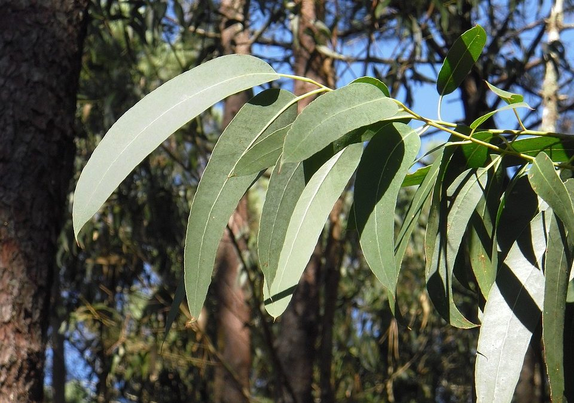
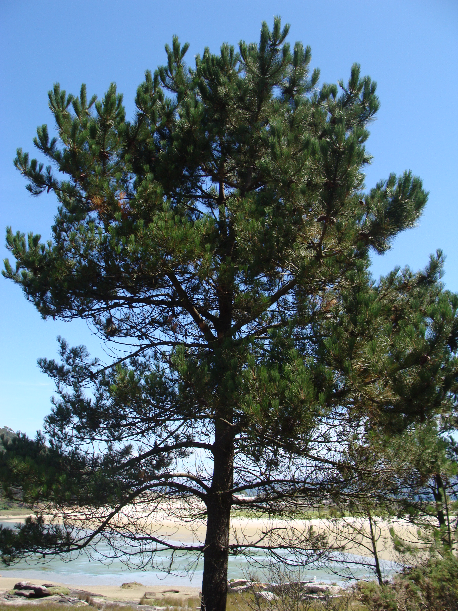
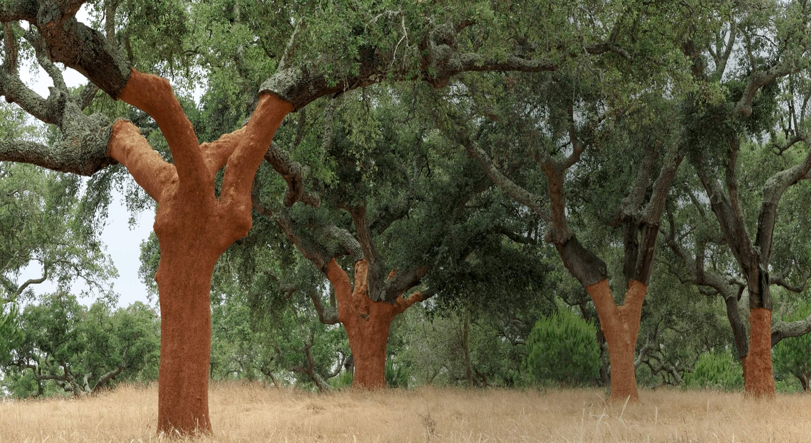
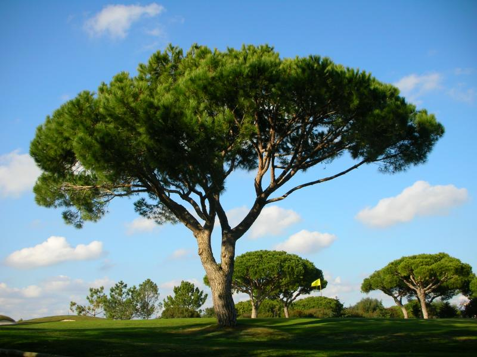
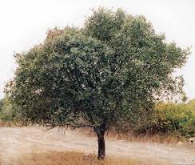
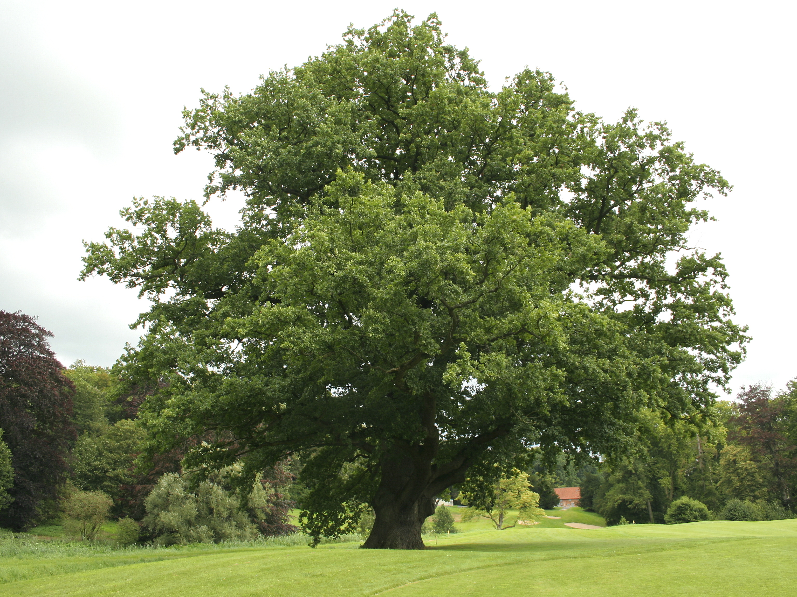
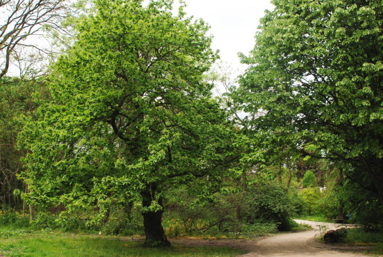

O ESTADO DAS FLORESTAS E SUA IMPORTÂNCIA PARA A EXISTÊNCIA HUMANA
Supermercado
A demanda global de alimentos crescerá 50% até 2050 e serão necessários mais cultivos para aumentar a segurança e a sustentabilidade alimentar. Isto acarreta a necessidade de políticas agrárias ecológicas com as florestas para evitar o desmatamento.
Seguro de vida
As florestas geram 20% da renda familiar nas áreas rurais dos países em desenvolvimento. Além disso, alguns produtos florestais proporcionam sustento para uma de cada cinco pessoas no mundo, especialmente no tocante aos grupos sociais mais vulneráveis.
Fonte de água
As florestas fornecem água potável para mais de 33% das maiores cidades do mundo. A qualidade deste recurso, primordial para a saúde e o desenvolvimento rural e urbano, está vinculada com a gestão florestal.
Energia
As florestas propiciam 40% de toda a energia renovável do mundo. Portanto, será necessário conseguir combustível vegetal de forma mais sustentável para diminuir a deterioração da superfície florestal.
Super-herói
Uma boa gestão florestal fortalece a resiliência e a adaptação às catástrofes naturais relacionadas com as mudanças climáticas, além de favorecer a adoção de medidas globais que combatem o aquecimento do planeta.
Sumidouro de carbono
Neste sentido, a importância das florestas passa pela absorção do equivalente a uns 2 bilhões de toneladas anuais de CO2. Saiba mais sobre os sumidouros de carbono aqui.
Recreio
O turismo de natureza é responsável por 20% da indústria turística mundial. Por outro lado, a taxa de obesidade infantil é até 19% mais baixa em lugares onde as crianças têm um fácil acesso a áreas verdes.
Porquê de preservar as floresteas:
- Renovar o O2 do ar
- Fixam o carbono atmosférico
- Protegem os campos e os solos
- Regularizam os regimes hídricos
- Valorizam a paisagem
- Oferecem os melhores espaços de recreio e lazer
Dia da Proteção às Florestas: Qual a importância?
- Reduza o consumo de carne bovina
- Plante árvores nativas
- Opte por produtos de madeira certificada
- Recicle: não deixe seus resíduos poluir nossas florestas
- Priorize alimentos orgânicos e agroflorestais
- Compre do pequeno produtor
- Apoie organizações que cuidam das florestas
.
Distribuição das áreas totais por espécies, em 2010
Uso dos solos em Portugal continental
| Eucaliptos | 26 |  |
| Pinheiros-bravos | 23 |  |
| Sobreiros | 23 |  |
| Azinheiras | 11 |  |
| Pinheiros-mansos | 6 |  |
| Outras folhosas | 6 |  |
| Outras resinosas | 2 |  |
| Carvalhos | 2 |  |
| Castanheiro | 1 |  |
| Florestas | 35 |
| Improdutivos | 2 |
| Águas interiores | 2 |
| Urbanos | 5 |
| Agricultura | 24 |
| Matos e pastagens | 32 |